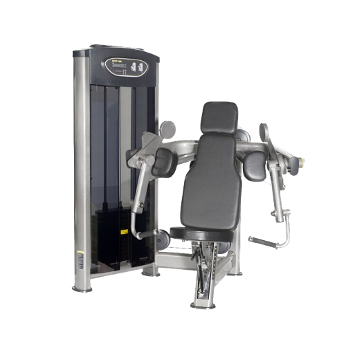
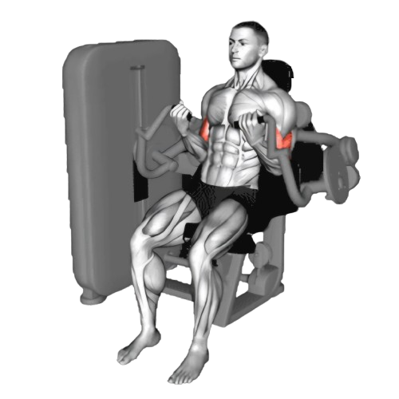
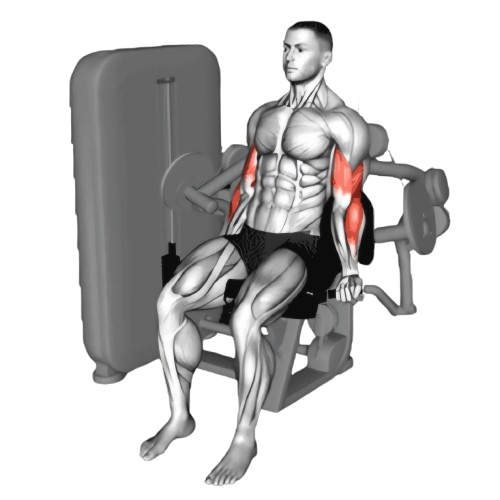

머신 바이셉 컬

- 머신에 앉아 팔꿈치를 패드에 고정하고 손잡이를 어깨너비로 잡는다.
- 손잡이를 잡고, 이두근의 힘으로 손잡이를 천천히 들어 올린다.
- 정점에서 잠시 멈추고, 이두근이 완전히 수축된 상태를 유지하며 긴장을 느낀다.
- 이때 호흡은 뱉는다.
- 천천히 팔을 펴며 시작 위치로 돌아간다. 이때도 팔꿈치를 고정하여 이두근에 계속해서 긴장이 유지되도록 한다.
- 이때 호흡은 마신다.

주의사항
- 팔꿈치를 패드에서 떼지 않고 고정한 채로 움직여야 한다. 팔꿈치가 흔들리면 어깨나 상완근으로 힘이 분산될 수 있다.
- 지나치게 무거운 중량은 잘못된 자세를 유발할 수 있어 부상의 원인이 된다.
운동부위 및 효과
- 이두근, 전완근
- 이두근의 모양을 만들고, 탄탄한 팔 라인을 형성하는 데 효과적이다.